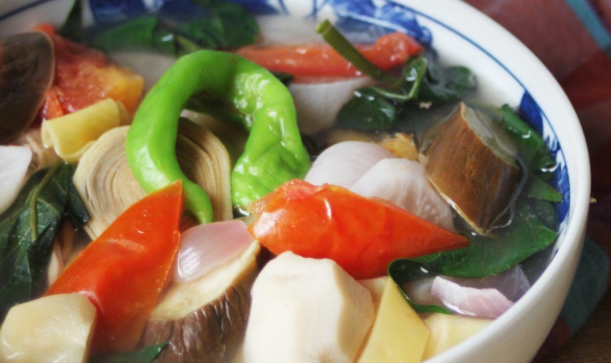

Introduction
Welcome to this interactive cooking guide! This recipe will walk you
through making Sinigang, a delicious Filipino sour soup. Use the
navigation buttons below to move through each step.
Total Time: 1 hour | Serves: 4-6 people
Ingredients
1 pound (450g) pork belly or pork ribs, cut into 1-inch pieces
1 medium onion, quartered
2 medium tomatoes, quartered
1 pack (40-50g) tamarind soup base (or 2-3 tablespoons tamarind
paste)
2 pieces green chili (siling haba)
1 radish (labanos), sliced
1 eggplant, sliced diagonally
2 cups string beans (sitaw), cut into 2-inch pieces
2 cups kangkong (water spinach) or spinach leaves
2-3 pieces taro (gabi), peeled and quartered
8 cups water
Fish sauce (patis) to taste
Salt and pepper to taste
Introduction
Start Cooking
Step 1: Prepare Ingredients
Gather and prepare all your ingredients for the Sinigang.
Cut pork belly or ribs into 1-inch pieces
Quarter the onions and tomatoes
Peel and quarter the taro
Slice the radish and eggplant
Cut string beans into 2-inch pieces
Wash the kangkong or spinach leaves
Previous: Introduction
Step 1
Next: Step 2
Step 2: Cook the Meat
Now we'll start cooking the pork for our Sinigang.
In a large pot, bring 8 cups of water to a boil
Add the pork pieces and simmer for 10 minutes
Skim off any scum that rises to the surface
Add the quartered onions and tomatoes
Continue to simmer for about 30 minutes or until the meat is tender
Cooking Tip
For more flavorful meat, you can sauté the pork with onions and
garlic before adding water. This step is optional but adds depth to
the flavor.
Previous: Step 1
Step 2
Next: Step 3
Step 3: Add Vegetables and Souring Agent
Now we'll add the vegetables and the souring agent that gives Sinigang
its distinctive flavor.
Add the taro pieces and simmer for 5 minutes
Add the radish slices and simmer for another 3 minutes
Add the tamarind soup base or tamarind paste and stir well
Add the green chili peppers
Season with fish sauce (patis) to taste
Let the soup simmer for 2-3 minutes to blend the flavors
Cooking Tip
If using fresh tamarind instead of packaged soup base, boil about 1
cup of tamarind pulp in water, mash, and strain the juice into the
soup.
Previous: Step 2
Step 3
Next: Step 4
Step 4: Add Remaining Vegetables
Now we'll add the remaining vegetables to complete our Sinigang.
Add the eggplant slices and cook for 3 minutes
Add the string beans and cook for 2 minutes
Finally, add the kangkong or spinach leaves
Cook for just 1 minute until the leaves wilt
Taste and adjust the sourness and saltiness according to your
preference

Cooking Tip
Add the vegetables in stages based on their cooking time. Leafy
vegetables like kangkong should be added last as they cook very
quickly.
Previous: Step 3
Step 4
Next: Step 5
Step 5: Serve the Sinigang
Your Sinigang is now ready to be served!
Turn off the heat and let the soup rest for 2-3 minutes
Ladle the soup, meat, and vegetables into serving bowls
Make sure each bowl gets a good portion of meat and various
vegetables
Serve hot with steamed rice on the side
Provide additional fish sauce for those who prefer a saltier taste
Congratulations!
You've successfully completed the Sinigang recipe. Enjoy your
delicious Filipino sour soup with rice!
Previous: Step 4
Step 5
Restart Recipe